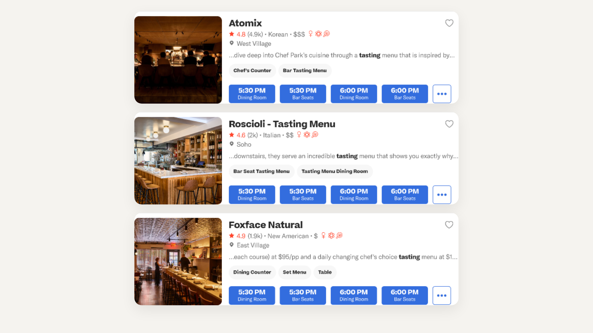

Context
Somm AI was a Resy Search & Availability concept built around a simple question: what happens when diners stop thinking in filters and start asking for help in plain language?
By May 2025, Google and other search surfaces were already training users to expect direct, conversational answers. Resy had a different raw material to work with than generic search engines: editorial taste, neighborhood nuance, and real booking inventory.
Challenge
Traditional restaurant discovery leans on list views and granular filters like cuisine, time, and price. That model is powerful, but it breaks down when intent is fuzzy: “tasting menu near me,” “date night but not stuffy,” or “birthday dinner under $100.”
A generic AI layer would not have been enough. The experience needed to feel opinionated, trustworthy, and unmistakably Resy while still keeping diners close to real availability and the downstream booking flow.
Strategy
- Hybrid search model: put an AI-generated answer at the top of results, then keep traditional venue cards directly underneath so users could move from guidance into action without switching mental models.
- Editorial grounding: shape answers around Resy Guides, Collections, and curated language instead of generic summaries, so the system could explain not just what matched, but why it matched.
- Context + follow-ups: use the answer block to suggest neighborhoods, price tiers, availability context, and a next prompt that refined the original search instead of forcing users back into dropdowns.
- Transparent trust cues: frame the concept as an early beta and explicitly point back to linked sources, keeping the AI layer assistive rather than authoritative.
Outcome
Somm AI never shipped, but the proof of concept clarified a strong product thesis: Resy’s advantage in AI search was never going to be generic language generation on its own. The real opportunity was combining conversational guidance with editorial curation and bookable inventory.
The work also created a sharper competitive frame. OpenTable still centered filters, Google’s AI layers felt broad and noisy, and Yelp remained reviews-first. Resy could have occupied a warmer middle ground: not just a booking tool, but a dining concierge with real tables behind the answer.
Key Learnings
The most compelling version of AI discovery did not replace search mechanics. It reduced the cost of getting started, then handed users back to familiar cards, availability, and booking actions once intent was clearer.
The concept also reinforced an important product lesson: even unshipped experiments can do useful strategic work. Somm AI helped define what an editorially grounded, availability-aware AI surface could look like inside Resy long before that direction became table stakes across consumer products.
Visuals


